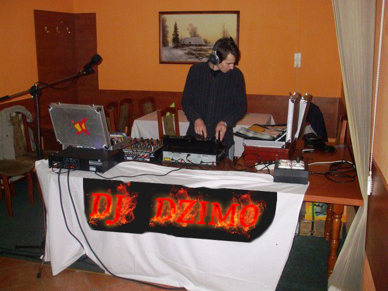

Místo narození: Košice, Slovensko
Imrich Stolár študoval na Technickej Univerzite v Košiciach. Mimo štúdia zastával funkciu riaditeľa košickej pobočky IAESTE, kde ho stretol IT Extreme x3m Ján Ištočko. Po krátkej spolupráci, ktorá bola obojstranne veľmi výhodna tak začali spolupracovať aj v ramci Hudby a Manažmentu. Džimo mal na starosti v spoločnosti ExtremeSystems Time management a spolupodieľal sa na implementácii projektu CAP. Získal certifikáciu Bx8 Time Management, ako prvý vo východnej Európe. V roku 2011 dostal ponuku na spoluprácu v rámci ExtremeSystems Entertainment a to na ozvučení pre film Matrix Begins, seriálový Matrix Adaptation a herná simulácia Tesla vs. Porsche East Slovakia Championship a Tesla vs. Porsche Europe Tour. Momentálne ma na starosti marketingové a produktové oddelenie ExtremeSystems a naďalej pracuje na prepojení technológie CAP a bussiness applikácii iSaleIt nad platformou UGRID. V roku 2012 sa rozhodol vycestovať do zahraničia za účelom marketingových aktivít na cudzích trhoch , kde mal na starosti chod pobočky ExtremeSystems Nemecko, Čína , USA a Monako. V roku 2014 sa vrátil opäť na Slovensko kde sa plne venuje nasadeniu produktu iSaleIt pre stredne a veľké nadnárodne spoločnosti.
 V prípade akustického vedomia vypracoval mnoho štúdii v zahraničí a produkoval niekoľko promo skladieb pre reklamné produkty najväčších svetových hudobných značiek a staral sa o zabezpečenie fungovania promo presentation akcií.
Od roku 1999 sa aktívne venuje DJ-ingu a hraniu na hudobných nástrojoch. Jeho snom je mať vlastné štúdio, kde môže kľudne komponovať nadčasovú hudbu pre ostatných.
V prípade akustického vedomia vypracoval mnoho štúdii v zahraničí a produkoval niekoľko promo skladieb pre reklamné produkty najväčších svetových hudobných značiek a staral sa o zabezpečenie fungovania promo presentation akcií.
Od roku 1999 sa aktívne venuje DJ-ingu a hraniu na hudobných nástrojoch. Jeho snom je mať vlastné štúdio, kde môže kľudne komponovať nadčasovú hudbu pre ostatných.